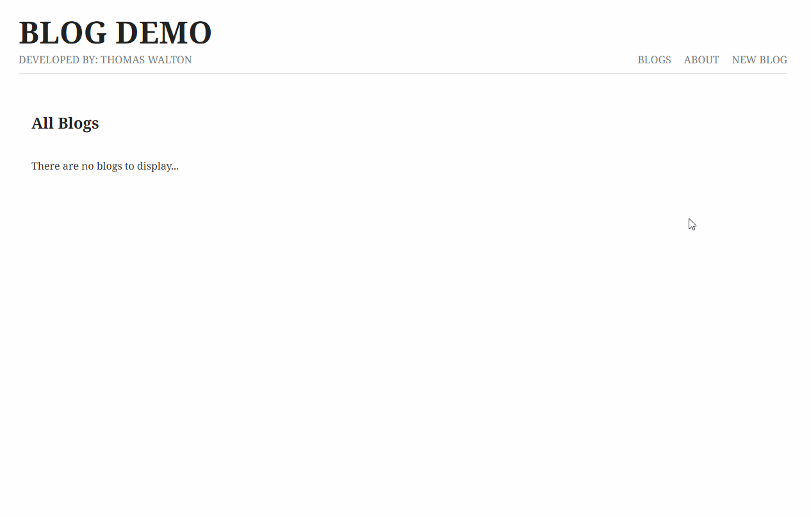
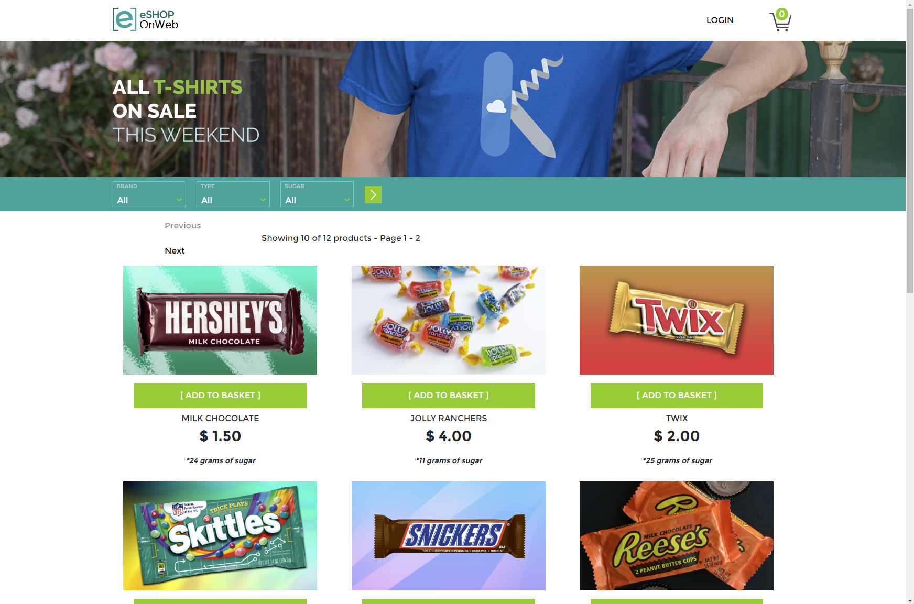

As a software engineering student, I had the opportunity to design and develop a minimalistic website for Up-North Cleaners, a local cleaning business. The project encompassed a blend of front-end and back-end technologies, with an emphasis on HTML, CSS, and JavaScript for creating a user-friendly interface, coupled with Node.js and Express.js to handle form submissions on the back-end. This assignment strengthened my understanding of server-side programming and the importance of an interactive and aesthetically pleasing user interface. The end result was a professional, functional website that effectively enhanced the client's digital presence and their communication with potential customers.

In this project, I utilized Node.js, Express, EJS, and MongoDB to create a simple yet functional blog website. This demo showcases my ability to integrate various technologies to develop a cohesive web application. The site uses straightforward CRUD operations found on various endpoints to Create, Read, Update, and Delete blog posts, where the data is directly stored and managed in a MongoDB Atlas Cloud database. This project serves as a representation of my foundational skills in web development.

The mock eShop website provided by Microsoft is an incredibly useful tool to learn about monolithic architecture and large-scale web applications. There are hundreds of files within the project, and it provides some context as to what an application may look like in a professional setting. I performed various tasks relating to the project, such as adding new products, adding additional filters, and performing calculations on the orders. Changes were made using a version of Scrum in a sprint like format based on user stories.
